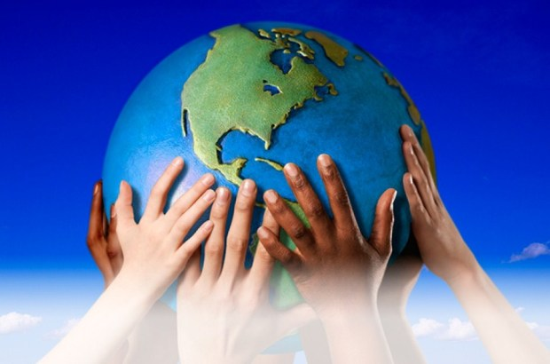

Para que un gobierno y las personas se beneficien de manera sostenible de tales ofertas, todas las partes interesadas deben participar desde el principio. Eso significa que el gobierno nacional, el gobierno local, los pequeños agricultores y otros pueblos marginados, terratenientes, grupos de conservación de la vida silvestre, etc. deben estar en la mesa cuando se tomen decisiones.
Los datos e información ambiental y macroeconómica de buena calidad son esenciales. Los riesgos y beneficios potenciales y los impactos ambientales de cualquier acuerdo deben ser revisados minuciosamente por todos los involucrados. El gobierno y otras partes interesadas necesitan tener la capacidad técnica para equilibrar los diferentes intereses y permitir que se llegue a un consenso con todas las partes para el beneficio de todos, sin dañar el medio ambiente.
Esto requiere adoptar un enfoque de todo el sistema, observar el panorama general y tener toda la información para comprender completamente los impactos de los diferentes usos de la tierra. La gestión integrada de ecosistemas, como parte del enfoque de paisajes, ve el medio ambiente como una red compleja de partes conectadas y requiere un enfoque holístico.
